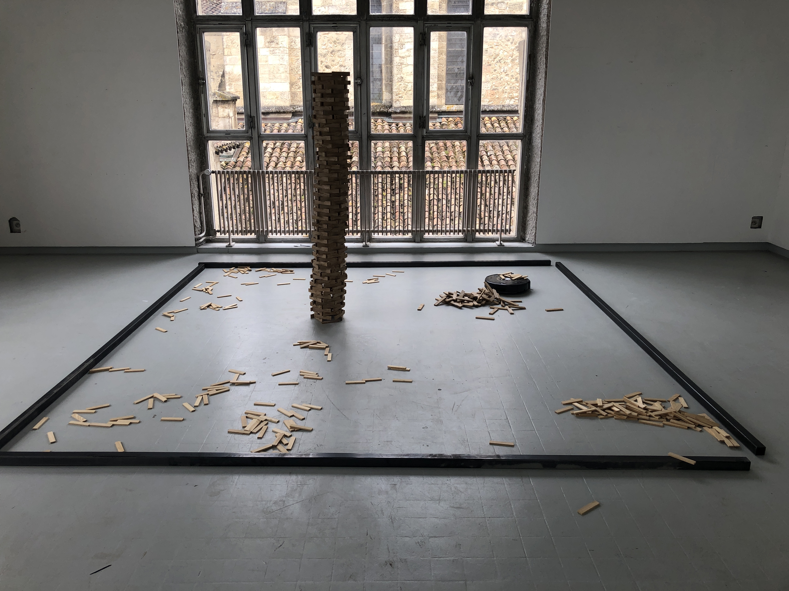
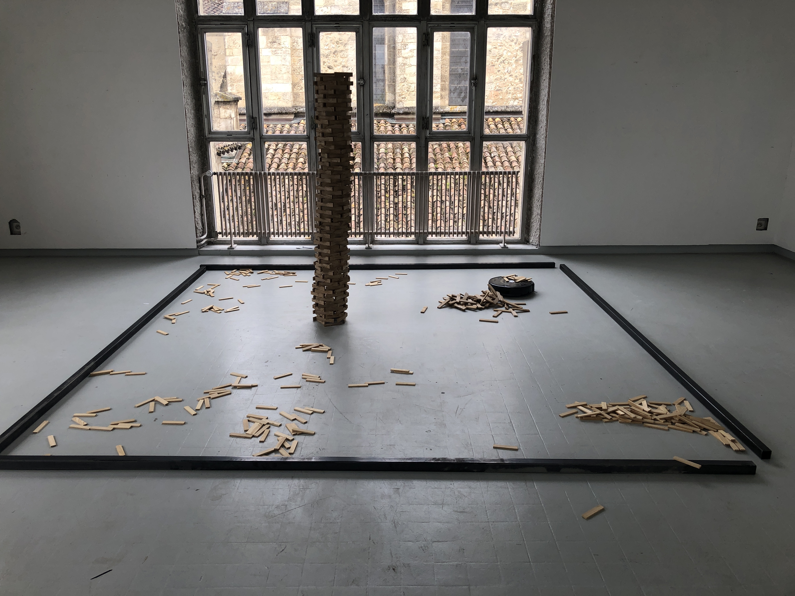

Dans ce projet sonore collectif, j'ai invité des personnes venues des quatre coins du monde à imaginer leur propre scénario d'apocalypse. Mais pas avec des mots, avec des sons.
Chacun·e a pris le temps de mimer vocalement ce à quoi ressemblerait, pour lui ou elle, le bruit de la fin. Explosion, silence, râle, rires, grondements, soupirs... De cette matière brute, j'ai composé une symphonie absurde qui rassemble ces visions personnelles du déclin.
L'installation est accompagnée d'un robot aspirateur qui, de façon mécanique et dérisoire, fait s'effondrer des tours de Kapla. Une métaphore désorientée du monde qui s'écroule, mais sans haine, sans rage, comme une farce à laquelle on assiste, un peu bête, un peu ému·e.
 
